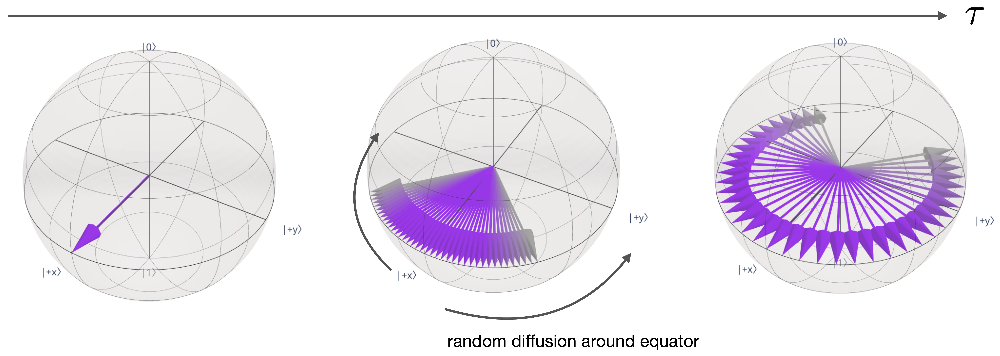

Circuit timing information#
Background#
Quantum circuits are abstract objects; circuits are comprised of a set of virtual qubits onto which one applies instructions. Even after compilation targeting a specific quantum system, there is no explicit notion of “how long” does a circuit run for. One can use the circuit depth as a proxy for detialed timing information, but it is useful for comparisons only.
Executing circuits on hardware takes time, and there are a variety of reasons as to why this timing information is worth knowing. First and foremost, the execution time of one or more circuits is the primary metric by which the “cost” of a quantum computation is determined. Second, it can give insight into how noise affects the circuit; if the circuit duration is an appreciable fraction of \(T_{1}\) or \(T_{2}\), then the resultant output is likely to be noisy. Moreover, the error rates of many instructions, eg. measurements, is primarily determined by the duration of time that those operations last. In addition, knowing the timing of circuit operations, including the amount of time that qubits are idle, allows for suppressing several sources of errors via the application of dynamical decoupling (DD). Lastly, working at the level of physical pulses, rather than abstract gates, necessarily requires timing knowledge. Here we will see how to look at timing information in a circuit and how that affects noise modelling on simulators. Finally we will throw it all together in an example.
Frontmatter#
import numpy as np
from qiskit import *
from qiskit.circuit import Parameter
from qiskit.quantum_info import hellinger_fidelity
# Grab the statevector class
from qiskit.quantum_info import Statevector
#Routine for computing expectation values from sampled values
from qiskit.result import sampled_expectation_value
# Visualize circuit timing information
from qiskit.visualization import timeline_drawer
# Import Aer simulator
from qiskit_aer import AerSimulator
# Plotting tools
import matplotlib.pyplot as plt
try:
plt.style.use('quantum-light')
except:
pass
%config InlineBackend.figure_format = 'retina'
Circuit timing#
Suppose that I have the following two circuits that make 5-qubit GHZ states:
qc1 = QuantumCircuit(5)
qc1.h(2)
qc1.cx(2,1)
qc1.cx(1,0)
qc1.cx(2,3)
qc1.cx(3,4)
qc1.measure_all()
qc1.draw('mpl')
qc2 = QuantumCircuit(5)
qc2.h(0)
qc2.cx(0,range(1,5))
qc2.measure_all()
qc2.draw('mpl')
How long does it take each circuit to execute on hardware? The answer is of course: “It depends”. The answer is determined by which quantum system is selected, which qubits in that system are used for the computation, and even which qubit routing strategy is employed. Lets begin by choosing a system and seeing what timing information can be gathered.
Backend timing information#
Each IBM Quantum backend (and most “fake” backends) have all their timing information stored in their properties:
from qiskit.providers.fake_provider import FakeKolkata
backend = FakeKolkata()
props = backend.properties()
We know that the only gates a device supports are found in the basis_gates
basis_gates = backend.configuration().basis_gates
basis_gates
['id', 'rz', 'sx', 'x', 'cx', 'reset']
Thus we expect to be able to find timing information for each of these gates. Lets see how long all the 1Q gates take on qubit 0. This can be done using properties.gate_length()
for gate in basis_gates[:4]:
print(f"{gate} gate : {props.gate_length(gate, 0)} sec")
id gate : 3.5555555555555554e-08 sec
rz gate : 0.0 sec
sx gate : 3.5555555555555554e-08 sec
x gate : 3.5555555555555554e-08 sec
Perhaps surprisingly we see that 3 of the 4 gates take the exact same amount of time, \(35.6~\rm ns\), while the rz gates takes no time at all. This is not a mistake. The x and sx gates are set to be a specific duration of time, and the only parameter used for calibration is the gate amplitude. For legacy reasons, an id gate on IBM hardware has its effective duration set to the same value. In contrast, rz gates are virtual gates, the application of which is done in software; they modify the phase of later gates, but take no time themselves. Although we have looked only at Q0, the single qubit timings are the same for any qubit in the system.
What about 2Q gates? There is one 2Q gate per entry in the system coupling_map. So we can use this map to iterate over all the 2Q gate values as well using properties.gate_length(). However, in contrast to the 1Q data, here we will see that there is a spread of durations for the 2Q gates:
cx_durations = []
for edge in backend.configuration().coupling_map:
cx_durations.append(props.gate_length('cx', edge))
mean_cx_time = np.mean(cx_durations)
stddev_cx_time = np.std(cx_durations)
print(f"cx duration : {mean_cx_time} sec \u00B1 {(stddev_cx_time/mean_cx_time)*100} %")
cx duration : 4.1536507936507934e-07 sec ± 44.308526904800885 %
We see that there is a very wide spread of values of cx gates durations across the device. Thus which qubits and therefore 2Q gates we use in a circuit will have a fairly large impact on the overall runtime. Comparing the 1Q and 2Q gate times, we see that a 2Q gate on this system takes roughly 10x longer than a 1Q gate.
Lastly, let us now look to see how long measurements take. This information is stored as properties.readout_length():
meas_durations = []
for qubit in range(backend.configuration().num_qubits):
meas_durations.append(props.readout_length(qubit))
Looking at the full list one can see that all the measurement durations are the same, and are roughly 2x longer than the typical cx gate times on this system. Since all the values are the same, here we just show the zeroth entry:
meas_durations[0]
6.755555555555555e-07
Note that older systems may have measurement durations that are much long than that shown here.
Scheduling circuits#
Now that we have taken a look at soem timing information from our backend, it is now time to add that information into our circuits. In Qiskit, adding timing information is called “scheduling”, and wile it can be done a couple of ways, the easiest is using transpile.
Scheduling a circuit requires a backend with that information (no abstract simulators), and the type of scheduling is set via the scheduling_method keyword argument. We can pass two strings to this arguement, 'alap' for As-Late-As-Possible sheduling where all the gates are pushed as late as possible (farthest to the right) in the circuit. Alternatively, asap scheduling moves everything to execute as early as possible (fartherst to the left). 'alap' is what the backends use by default.
sched_qc1 = transpile(qc1, backend, optimization_level=3, scheduling_method='alap')
sched_qc1.draw('mpl')
We see that our now contains delay instructions. In fact, there is at least one delay on each qubit, regardless of if it is actually active or not. Each delay effective works as a “do nothing” object that has a specific duration. This is different than an idenity gate with time because, unlike identity gates that can be combined and satisfy commutation relations, delay operations are fixed, and cnnot be removed or simplified.
The duration of delay instructions in the circuit above are in units of dt. So what in the world is dt? Unlike the continuous flow of time that we are familiar with, the timing information in a quantum circuit is discrete. This discreteness is dtermined by the resolution of the waveform generators used to construct the pulse-shapes that correspond to the gates in a circuit.
The dt value in the circuit corresponds to the granularity time corresponding to this resolution. We can get a numerical value for dt from the backend’s configuration:
dt = backend.configuration().dt
dt
2.2222222222222221e-10
We can then multiply this value with the circuit’s duration that is in units of dt to get the runtime of the circuit:
sched_qc1.duration * dt
1.7564444444444444e-06
Here we see that the circuit takes about 1.7 microseconds to run.
We can get a better feel for the timing in this circuit by using the timeline_drawer:
timeline_drawer(sched_qc1, show_idle=False)
From this view we get a better feel of how the operations in a circuit are laid out in time. In particular notice that the qubits are not always busy. Instead, there are portions of the circuit where one or more qubits are idle; waiting for operations on other qubits to be applied. Qubits that are idle are still suceptible to noise, and it is actually beneficial to keep them active using particular gate sequences that approximately “decouple” the qubits from noise sources. We will see how this works later on.
Let us now turn to the second circuit:
sched_qc2 = transpile(qc2, backend, optimization_level=3,
scheduling_method='alap', seed_transpiler=12345)
timeline_drawer(sched_qc2, show_idle=False)
Circuit #2 is obviously much longer than circuit #1 due to the increased number of cx gates in the circuit. This is to be expected because, as we have seen earlier, a circuit requiring more than 3 cx gates on a single qubit needs to add swap gates. In the case of the example above, there are 2 added swap gates. Looking at the total execution time for this circuit it is about twice as much as the first:
sched_qc2.duration * dt
3.509333333333333e-06
Rep delay#
When running circuits on hardware, the actual runtime per circuit execution is not just the raw time from the circuit, but also includes a repetition delay (rep_delay) time. This time is inserted between circuits to allow for relaxation (\(T_{1}\)) to help prepare the ground state for the next execution.
On any IBM Quantum system, the default rep_delay used by the system is given by:
rep_delay = backend.configuration().default_rep_delay
rep_delay
9.999999999999998e-05
So the total time taken when executing circuit #2 above a single time is dominated by the rep_delay time, with a total wall clock time of:
sched_qc2.duration * dt + rep_delay
0.00010350933333333331
So this result is saying that, in absence of any other overheads, we can execute about 10,000 circuits per second. Note that the rep_delay is a parameter that is tunable by end users, and can be set between a range of values
backend.configuration().rep_delay_range
[0.0, 0.0005]
One can set this in backend.run(), e.g.
backend.run(circuits, rep_delay=300e-6)
Noisy simulation of scheduled circuits#
One of the important benefits of having timing information in our circuits is that it allows us to compute the errors associated with qubits being left idle. Up until now, our noisy simulations only included errors associated with gates. However, even when idle, qubits are subject to relaxation and dephasing due to the finite values of \(T_{1}\) and \(T_{2}\), respectively. Upon scheduling, a circuit now has one or more delay instructions with specific durations that allow a simulator to compute the effect of \(T_{1}\) and \(T_{2}\) over this time span. Because these errors are in addition to those that come from gates, the overall fidelity predicted by the simulation will go down. It will however better model the results that should be expected from exection on hardware.
The effect of \(T_{1}\) and \(T_{2}\)#
\(T_{1}\) and \(T_{2}\) correspond to time scales for relaxation and dephasing, respectively. To see what that terminology means, let us consider two simple experiments. First, let us flip a single qubit into the \(|1\rangle\) state, and then add a delay instruction parameterized by a time \(\tau\) before measuring.
tau = Parameter('tau')
flip_delay_qc = QuantumCircuit(1)
flip_delay_qc.x(0)
flip_delay_qc.delay(tau, 0)
flip_delay_qc.measure_all()
flip_delay_qc.draw('mpl')
By default everything is in units of dt, so lets query the backend to find its \(T_{1}\) time and express it in terms of dt:
t1_dt_duration = int(backend.properties().qubit_property(0, 'T1')[0]/backend.configuration().dt)
t1_dt_duration
544694
Let us now seep the delay time \(\tau\) over several times the \(T_{1}\) duration and see what happens:
# Simulate over 3x the T1 time, taking 50 steps
t1_times = np.linspace(0, 3*t1_dt_duration, 50)
# Create a collection of circuits, one for each time in t1_times
delay_circs = [flip_delay_qc.assign_parameters([int(dt)]) for dt in t1_times]
Execute the circuits and look at the probability of remaining in the \(|1\rangle\) state
shots = int(1e4)
flip_delay_counts = backend.run(delay_circs, shots=shots).result().get_counts()
# The probability of being in the |1> state at each time
probs_up = [cnts.get('1', 0)/shots for cnts in flip_delay_counts]
fig, ax = plt.subplots()
ax.plot(t1_times, probs_up)
ax.axvline(t1_dt_duration, color='0.4', lw=2, linestyle='dashed')
ax.text(t1_dt_duration, 0.75, "$T_{1}$ time", rotation='vertical', ha='right', fontsize=16)
ax.axhline(1/np.e, color='0.4', lw=2, linestyle='dashed')
ax.text(0.1, 1/np.e, "1/e", va='bottom', fontsize=16)
ax.set_ylim([0,1])
ax.set_ylabel("Probability")
ax.set_xlabel('Time (dt)')
ax.set_title('Probability of remaining in $|1\\rangle$ state');
we see that, at he \(T_{1}\) time, the probsbility of remaining in the \(|1\rangle\) state is \(1/e\) of its original value. This can de taken at the definition of the \(T_{1}\) time; it is a measure of how fast a system relaxes back to the ground state.
We can do a similar study to find out what \(T_{2}\) is doing. To do so we start with the qubit in the \(|0\rangle\) state, and apply an H gate to bring it to the \(|+\rangle\) state, and then wait. After some time \(\tau\) we apply another H, and see what the probability is to find the qubit back in the ground state.
diff_delay_qc = QuantumCircuit(1)
diff_delay_qc.h(0)
diff_delay_qc.delay(tau, 0)
diff_delay_qc.h(0)
diff_delay_qc.measure_all()
diff_delay_qc.draw('mpl')

t2_dt_duration = int(backend.properties().qubit_property(0, 'T2')[0]/backend.configuration().dt)
t2_times = np.linspace(0, 3*t2_dt_duration, 50)
diff_circs = [diff_delay_qc.assign_parameters([int(dt)]) for dt in t2_times]
trans_diff = transpile(diff_circs, backend, scheduling_method='alap')
diff_delay_counts = backend.run(trans_diff, shots=1e4).result().get_counts()
probs_down = [cnts.get('0', 0)/1e4 for cnts in diff_delay_counts]
fig, ax = plt.subplots()
ax.plot(t2_times, probs_down)
ax.axhline(0.5/np.e+0.5, color='0.4', lw=2, linestyle='dashed')
ax.text(0.1, 0.5/np.e+0.51, "$\\frac{1}{2e}+\\frac{1}{2}$", va='bottom', fontsize=16)
ax.axvline(t2_dt_duration, color='0.4', lw=2, linestyle='dashed')
ax.text(t2_dt_duration, 0.75, "$T_{2}$ time", rotation='vertical', ha='right', fontsize=16)
ax.set_ylim([0.4,1])
ax.set_ylabel("Probability")
ax.set_xlabel('Time (dt)')
ax.set_title('Probability of going back to $|0\\rangle$ state');
Noisy simulation with and without timing#
Knowing what happens when qubits are left idle, let us now return to our 5Q GHZ circuits and look at the resulting fidelity both with and without scheduling. Here we will only look at qc2, and transpile it without scheduling:
trans_qc2 = transpile(qc2, backend, optimization_level=3, seed_transpiler=12345)
We can now compare the outputs with and without scheduling against the known ideal answer:
ideal_ans = {'0'*5: 0.5, '1'*5: 0.5}
using the fidelity. Let us get the counts:
# Counts from scheduled circuit
sched_counts = backend.run(sched_qc2, shots=1e4).result().get_counts()
# Counts from circuit without timing
trans_counts = backend.run(trans_qc2, shots=1e4).result().get_counts()
The fidelity without timing information is
hellinger_fidelity(trans_counts, ideal_ans)
0.9326215674976868
whereas including timing information, and the noise associated with qubit idle times, yields:
hellinger_fidelity(sched_counts, ideal_ans)
0.9176072268887857
We see that the fidelity is reduced for a scheduled circuit. This is expected as we are including more sources of noise in our simulations. This noise is always there on real hardware, so the results from scheduled circuits are more faithful representations of what to expect when running on quantum systems.
Hands-on example#
Up until now we have played with simulators and small problems. Let us now try to work with real hardware.
Consider the following 12-qubit circuit:
N = 12
qc = QuantumCircuit(N)
qc.x(range(N))
qc.h(range(N))
for kk in range(N // 2, 0, -1):
qc.ch(kk, kk - 1)
for kk in range(N // 2, N - 1):
qc.ch(kk, kk + 1)
qc.draw('mpl')
where we wish to compute the expectation value of the operator \(\langle Z_{n-1}\cdots Z_{1}Z_{0}\rangle\) on a real device.
There is a general receipe to follow when working on problems that are small enough to be classically simulated.
1. If not known, find the ideal answer
2. Compile the circuit for a target device
3. Perform a noisy simulation (here both regular and scheduled)
4. Run the circuit on target device and get results
Here lets try to do the above steps for the circuit and operator above. In addition, find the total amount of time of circuit execution time, including rep_delay and compare to the reported total time of the job on the IBM Quantum website.
Tips#
It is possible to get the statevector resulting from action of a quantum circuit with no measurements using
from qiskit.quantum_info import Statevector
Statevector.from_instruction(circuit)
the ideal distribution of counts can be obtained via the state vectors probabilities_dict() method.
We cannot use the fake backend simulators here because they do not represent the current noise in the system; they are snapshots of a device at some time in the past. To generate a simulator that models the current hardware noise one can do:
from qiskit_aer import AerSimulator
backend_sim = AerSimulator.from_backend(backend)
where backend is the IBM Quantum system that you want to use.
Compute ideal answer#
state_vec = Statevector.from_instruction(qc)
ideal_probs = state_vec.probabilities_dict()
sampled_expectation_value(ideal_probs, 'Z'*N)
0.44628906249999983
Load real device and simulator model#
IBMQ.load_account()
<AccountProvider for IBMQ(hub='ibm-q', group='open', project='main')>
provider = IBMQ.get_provider(project='internal-test')
backend = provider.get_backend('ibm_hanoi')
backend_sim = AerSimulator.from_backend(backend)
Compute simulated answer with no timing#
trans_qc = transpile(qc.measure_all(inplace=False), backend, optimization_level=3,
seed_transpiler=12345)
sim_counts = backend_sim.run(trans_qc, shots=int(1e4)).result().get_counts()
sampled_expectation_value(sim_counts, 'Z'*N)
0.2486
Schedule and simulate#
sched_qc = transpile(qc.measure_all(inplace=False), backend, optimization_level=3,
seed_transpiler=12345, scheduling_method='alap')
timeline_drawer(sched_qc, show_idle=False)
sched_counts = backend_sim.run(sched_qc, shots=int(1e4)).result().get_counts()
sampled_expectation_value(sched_counts, 'Z'*N)
0.215
rep_delay = backend.configuration().default_rep_delay
dt = backend.configuration().dt
circuit_duration = sched_qc.duration
time_per_shot = circuit_duration*dt + rep_delay
print('Total raw circuit execution time: {} sec'.format(time_per_shot * 1e4))
Total raw circuit execution time: 2.5314666666666668 sec
real_job = backend.run(trans_qc, shots=int(1e4))
real_counts = real_job.result().get_counts()
sampled_expectation_value(real_counts, 'Z'*N)
0.168
print("Real execution time: ", real_job.result().time_taken)
Real execution time: 8.26334547996521
We see that the real execution time is longer than the raw circuit time. This is because there are classical overheads, such as converting an input circuit to waveforms, that also take time.